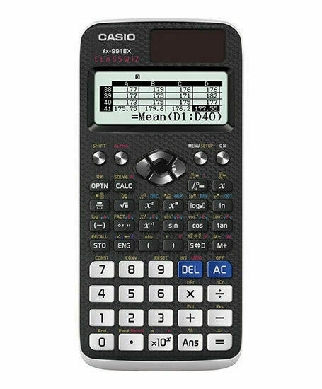

Cálculo I
Inicio
2. Límite
2.1 Límite Enfoque Informal
2.2 Teoremas Sobre Límites
2.3 Continuidad
2.4 Límites Trigonométricos
2.5 Límites con Infinito
2.6 Límites Enfoque Formal
2.7 La Recta Tangente
3. Derivada
3.1 La Derivada
3.2 Reglas de Potencia y Suma
3.3 Reglas de Producto y Cociente
3.4 Funciones Trigonometricas
3.5 Regla de la Cadena
3.6 Diferencia Implícita
3.7 Derivadas de Función Inversas
3.8 Funciones Exponenciales
3.9 Funciones Logaritmicas
3.10 Funciones Hiperbólicas
4. Aplicaciones de la Derivada
4.1 Movimiento Rectilíneo
4.2 Razones de Cambio Relacionadas
4.3 Extremos de Funciones
4.4 Teorema del Valor Medio
4.5 Regla de L´Hopital
4.6 Gráficas y la Primera Derivada
4.7 Gráficas y la Segunda Derivada
4.8 Optimización
4.9 Linealización y Diferenciales
4.10 Método de Newton
Ayuda
Herramientas
¿Cómo Usar el Sitio Web?
Sobre Nosotros
Herramientas para resolución de ejericios
GeoGebra
GeoGebra es un software de matemáticas para todo nivel educativo. Reúne dinámicamente geometría, álgebra, estadística y cálculo en registros gráficos.
Click Acá para Usar Herramienta
Desmos
Es una calculadora gráfica que permite observar funciones y su comportamiento en el plano cartesiano de acuerdo al valor de cada una de sus variables.
Click Acá para Usar Herramienta
Calculadora en Linea

En CalculadorasOnline.com, podrás encontrar calculadoras en línea para resolver una gran variedad de problemas de diferentes tipos y categorías.
Click Acá para Usar Herramienta
Photomath
Aplicación para aprender matemáticas, para erradicar la frustración de las matemáticas y traer más paz a tu vida estudiantil diaria.
Click Acá para Usar Herramienta
MathWay
Mathway ofrece a estudiantes las herramientas que necesitan para entender y resolver sus problemas de matemáticas.
Click Acá para Usar Herramienta
Cálculo I